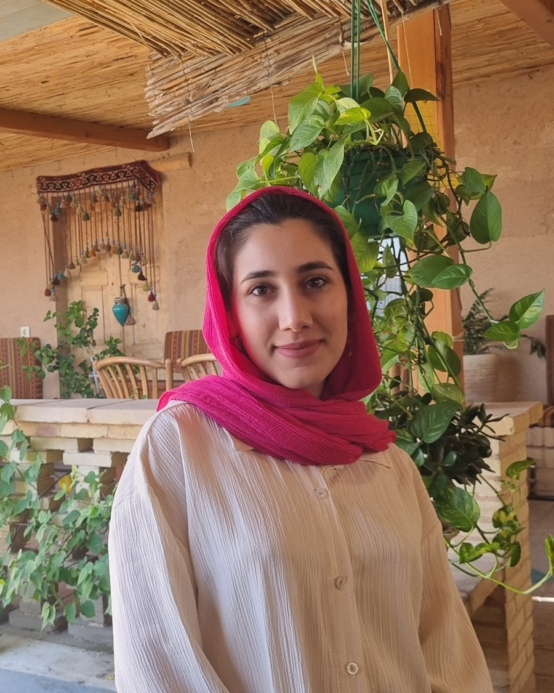

Product Analyst who writes specs engineers can build and stakeholders can trust.
I have two years as an analyst on the educational platform team at Datin, a fintech company serving B2B and B2C users, and two years as a Product Owner at a B2B marketplace startup.

Selected work
Three examples of how I move from a vague problem to a clear, testable specification. Company names are shown; internal details are generalized.
Gift card charged but not delivered
Case study, Datin
- Problem
- During high traffic, some customers were charged for a gift card without receiving it.
- My role
- Product analyst. I owned the diagnosis from data to recommendation.
- Approach
- I wrote SQL queries to find the affected transactions and read API logs to trace where the payment and delivery flows diverged.
- Outcome
- [Add: root cause, your recommendation, and the result if you have one.]
Prerequisite-based exam unlocking
PRD, Datin learning platform
- Problem
- Learners could open any exam in any order, so instructors could not enforce a learning path.
- My role
- Analyst. I wrote the PRD and user stories for the admin, instructor and learner panels.
- Approach
- I defined the unlock rules, edge cases and each panel's behavior, and documented them so engineering and QA worked from one source.
- Outcome
- [Add: what shipped and what changed. Link the anonymized PRD.]
Decision log for the exam builder
Documentation, Datin learning platform
- Problem
- Product decisions for the exam builder lived in chats and meetings, so the reasoning was hard to find later.
- My role
- Analyst. I created the decision log format and kept it current.
- Approach
- Each entry records the decision, the options considered, the reasoning and the impact on requirements.
- Outcome
- [Add: how the team uses it. Link an anonymized sample.]
Experience
Analysis and product ownership in fintech, edtech and marketplaces.
Software Analyst
Datin
Educational platform team, fintech company with B2B and B2C products. About two years.
- Write PRDs, user stories and requirements for the learning management system.
- Keep decision logs and a prioritized backlog for sprint planning.
- Specify integrations with external services.
Product Owner
[Startup name]
B2B marketplace startup. Two years.
- [Add two or three bullets: what you owned, and one result.]
Let's talk
The fastest way to reach me is email. I reply within a couple of days.